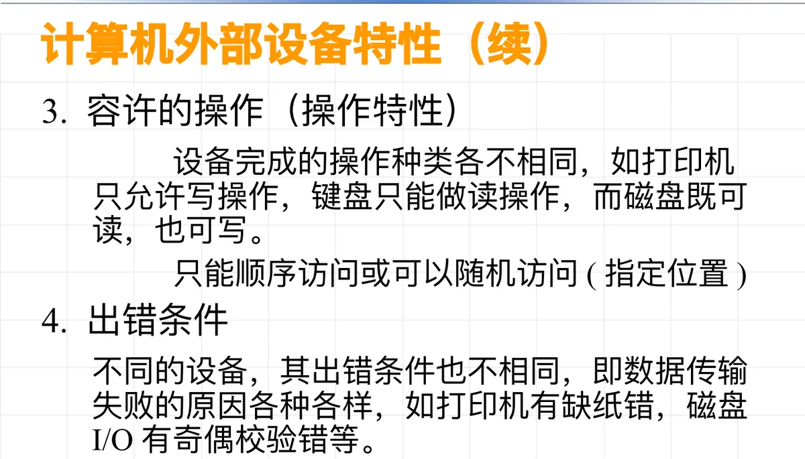
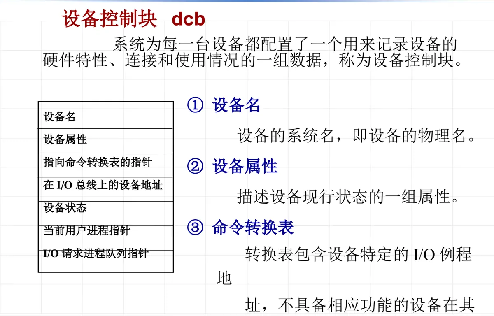
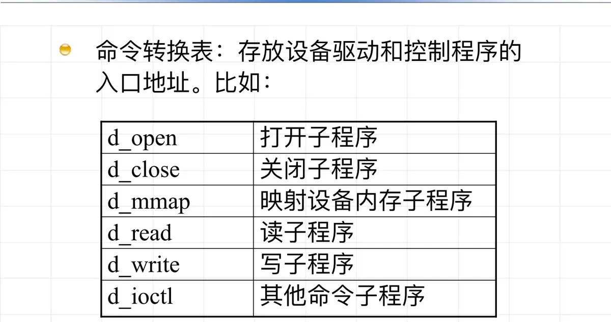

操作系统原理 · 第 8 章 设备管理
8.1 设备管理概述
设备管理是操作系统中最庞杂、最琐碎的部分。这一节先把范围界定清楚：什么算外部设备、它们有哪些共同特性；再回答两个目标性问题——操作系统管设备要达到什么目的，其中的关键概念是设备独立性与设备一致性；最后落到设备管理具体做什么，以及描述一台设备的核心数据结构：设备控制块 DCB 与命令转换表。
1. 计算机外部设备及其分类
在计算机系统中，除 CPU 和主存储器以外所有的设备和装置，统称为计算机外部设备（外设）。外设种类繁多，按功能可以分成三类：
- 存储设备：存储信息的设备，如磁盘、光盘、U 盘、SSD（固态硬盘）、磁带。它们一般以块为单位传输信息，所以又叫块设备。
- 输入/输出设备：把信息从计算机外部输入到内部，或从内部输出到外部。它们一般以字符为单位传输信息，所以又叫字符设备。其中输入设备是计算机用来感知外部世界的设备，例如键盘、鼠标、麦克风、各种传感器；输出设备是计算机用来影响外部世界的设备，例如打印机、显示器、绘图仪。
- 通信设备：负责计算机之间的信息传输，例如调制解调器、网卡等。
「块设备」与「字符设备」这一对术语后面会反复用到：传输单位不同，缓冲、设备分配等做法也就不同。
2. 外部设备的特性：设备管理为什么难
与 CPU、主存相比，外部设备之间的差异极大——速度差几个数量级、传输单位不一样、能做的操作不一样。正是这些差异，使设备管理成为操作系统中最庞杂的部分。可以把它们归纳为七个方面。
- 速度：不同外设的传输速度差别相当大。键盘不过几十、上百个字符/分，磁盘则是百万字节/秒。
- 传输单位：有的设备以字节为单位，如键盘、打印机、显示器；有的以字符块为单位，如软盘、硬盘、磁带，而且块的大小也不相同。
- 容许的操作（操作特性）：设备能完成的操作种类各不相同——打印机只允许写操作，键盘只能做读操作，磁盘既可读也可写；有的设备只能顺序访问，有的可以随机访问（指定位置）。
- 出错条件：不同设备数据传输失败的原因各式各样，例如打印机有缺纸错，磁盘 I/O 有奇偶校验错。
- 传输方式：直接端口访问或内存访问、DMA（Direct Memory Access，直接存储器存取）、中断，各不相同。
- 串行或并行：数据是一位一位地传，还是一次若干位同时传。
- 总线设备和终端设备：设备接入系统的方式不同。

面对这样一组参差不齐的对象，操作系统不可能为每种设备写一套独立的管理逻辑，只能先把它们的共性抽象出来——这就引出了后面的设备一致性与设备独立性。
3. 设备管理的目标
操作系统管理设备要达到两个目标。
（1）提高设备利用率
关键是把设备的并行操作做起来：提高设备与 CPU 之间、设备与设备之间的并行性。操作系统利用缓冲、通道、中断等技术，配合外设的各种物理特性，实现外部设备的共享和并行传输——本章 8.2 节的缓冲技术、8.4 节的通道与 DMA 方式正是围绕这一点展开的。
（2）方便用户使用
使用户摆脱具体的、复杂的物理设备特性的束缚。这一目标又归结为两个概念：设备独立性与设备一致性。
4. 设备独立性
（1）什么是设备独立性
所谓设备独立性，是指用户在程序中使用的设备与实际使用的设备无关，也就是在用户程序中仅使用逻辑设备名。这里先要区分两个名字：
- 逻辑设备名：用户自己指定的设备名（或设备号），它是暂时的、可更改的。
- 物理设备名：系统提供的设备的标准名称，它是永久的、不可更改的。
程序在执行过程中必须使用实际的物理设备，就好像程序在主存中一定要使用物理地址一样；但是在用户程序中应避免使用实际的物理名，而采用逻辑设备名。这样做的道理，和用户程序中要使用逻辑地址而不使用物理地址的道理一样。于是，设备管理的任务之一就是把逻辑设备名转换成物理设备名。
（2）两种类型的设备独立性
设备独立性有两个层次：
- 一个程序独立于分配给它的某种类型的具体设备。系统可以根据设备的使用情况，动态地把某类设备中的任一台物理设备分配给程序，程序都能正确地执行。
- 程序应尽可能与它所使用的 I/O 设备类型无关。输入（或输出）信息时，信息可以从不同类型的输入（或输出）设备上输入（或输出）；若要改变输入（或输出）设备的类型，程序只需进行最少的修改。
（3）设备独立性的实现
逻辑设备名到物理设备名的指派，常见两种做法：
在高级语言中用软通道实现：使用高级语言提供的指派语句，指派一个逻辑设备名（通道号）来定义一个设备或文件。例如把逻辑设备名 /dev/lp（打印机）指派给文件描述符 fd，之后所有读写都通过 fd 进行：
fd = open("/dev/lp", mode);
n = write(fd, buf, buf_len);在交互系统中用指派命令来定义：例如 PDP 系列机上的 RT11 系统，用 ASSIGN 命令把物理设备名指派给逻辑设备名：
ASSIGN 设备物理名 设备逻辑名（4）设备独立性的优点
引入设备独立性，首先使应用程序独立于物理设备：用户编程时只需用逻辑设备去请求使用某类设备，当系统中有多台该类设备时，系统把其中任意一台分配给请求进程，而不必局限于某一台指定的设备，这显著提高了资源的利用率和可适应性。其次，它使程序独立于设备类型：输出既可以用显示终端，也可以用打印机，于是可以很方便地实现输出重定向，类似地也可以实现输入重定向。
5. 设备一致性
尽管设备多种多样，很难用统一的方法来操作，操作系统还是要把各种设备的特性尽可能抽象出来，以便方便地操作各种设备。设备一致性体现在三点：
- 用相同的方法操作所有设备；
- 用相同的方法操作一类设备；
- 同一类设备可以共用一个设备驱动程序。
6. 设备管理的功能
有了目标和抽象，设备管理具体承担三项工作：
- 状态跟踪：动态地记录各种设备的状态。
- 设备分配与回收：按分配时机分两种——静态分配是应用程序级的，程序进入系统时进行分配，退出系统时收回全部资源；动态分配是进程级的，进程提出设备申请时进行分配，使用完毕后立即收回。
- 设备控制：用 I/O 指令操作设备，实施设备驱动和中断处理的工作。
7. 设备控制块 DCB 与命令转换表
状态跟踪和分配回收最终都要落到数据结构上。描述一台设备的核心数据结构是设备控制块 DCB（Device Control Block），它记录了这台设备的全部管理信息。
| 字段 | 含义 |
|---|---|
| 设备名 | 设备的系统名，即物理设备名 |
| 设备属性 | 描述设备现行状态的一组属性 |
| 指向命令转换表的指针 | 指向该设备的 I/O 例程入口地址表 |
| 在 I/O 总线上的设备地址 | 设备（控制器）在 I/O 总线上的编址 |
| 设备状态 | 设备当前的运行状态，如忙/空闲 |
| 当前用户进程指针 | 正在使用该设备的进程 |
| I/O 请求进程队列指针 | 等待使用该设备的进程队列 |

其中命令转换表是关键：它存放设备驱动和控制程序的入口地址，也就是设备特定的 I/O 例程地址。不具备相应功能的设备，在它的例程地址上可以填 -1 或 NULL，表示该功能不支持。

本节小结
- 外部设备＝除 CPU 和主存以外的设备和装置，按功能分为存储设备（块设备，以块为单位传输）、输入/输出设备（字符设备，以字符为单位传输）和通信设备；
- 外设在速度、传输单位、容许的操作、出错条件、传输方式等方面差异极大，这是设备管理「最庞杂、最琐碎」的根源；
- 设备管理的两个目标：提高设备利用率（靠缓冲、通道、中断等技术实现设备与 CPU、设备与设备之间的并行和共享）与方便用户使用（靠设备独立性与设备一致性）；
- 设备独立性＝用户程序只用逻辑设备名，由系统把它转换成物理设备名；它让程序既独立于具体设备、又独立于设备类型，因而便于实现输入/输出重定向。实现途径有高级语言的软通道与交互系统的指派命令两种；
- 设备一致性要求用相同的方法操作所有设备或一类设备，同类设备共用一个设备驱动程序；
- 设备管理的功能是状态跟踪、设备分配与回收（静态分配是应用级、动态分配是进程级）和设备控制；这些信息都记在设备控制块 DCB 中，DCB 再通过命令转换表找到该设备的驱动程序入口。